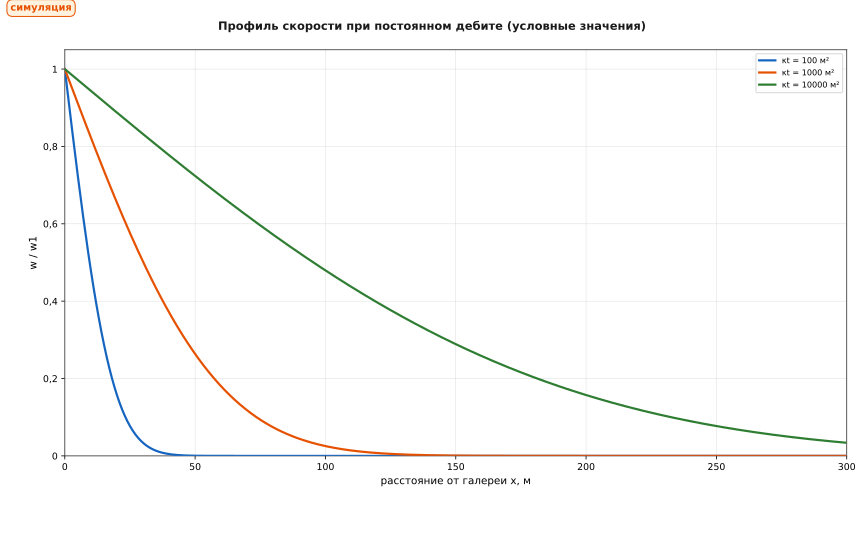

Путь › Как управление галереей меняет давление и отбор › Шаг 27 из 60
Скорость от галереи вглубь пласта
В книге: «Прямолинейно-параллельный фильтрационный поток упругой жидкости» стр. 486
Опирается на: шаг 26 «Шаблон решения для скорости» (предпосылка), шаг 24 «Пуск галереи с постоянным дебитом» (предпосылка)
Суть
На галерее функция ошибок равна нулю, поэтому постоянная C2 равна заданной скорости отбора.
Скорость в пласте равна заданной скорости, умноженной на дополнение erf до единицы.
Через закон Дарси эта скорость сразу даёт градиент давления.
Как это работает
Константы
На галерее интеграл от нуля до нуля обращается в нуль. стр. 486
«$$w_1 = C_1 \frac{2}{\sqrt{\pi}} \int_0^0 e^{-u^2} du + C_2.$$»
Поэтому аддитивная постоянная C2 равна заданной скорости отбора. стр. 486
«Из этих двух равенств имеем $C_2 = w_1$, $C_1 = -w_1$ и, следовательно,»
Множитель при функции ошибок равен заданной скорости со знаком минус. стр. 486
«Из этих двух равенств имеем $C_2 = w_1$, $C_1 = -w_1$ и, следовательно,»
Профиль скорости
Скорость в пласте равна заданной скорости, умноженной на дополнение функции ошибок до единицы. стр. 486
«$$w(x, t) = w_1 \left[ 1 - \operatorname{erf} \left( \frac{x}{2\sqrt{\kappa t}} \right) \right] = \frac{k}{\mu} \frac{\partial p}{\partial x}. \quad (23.35)$$»

У галереи скорость равна заданной, вглубь пласта она убывает. стр. 486
Полученная скорость прямо задаёт градиент давления. Его находят через отношение проницаемости к вязкости по закону Дарси. стр. 486
«$$w(x, t) = w_1 \left[ 1 - \operatorname{erf} \left( \frac{x}{2\sqrt{\kappa t}} \right) \right] = \frac{k}{\mu} \frac{\partial p}{\partial x}. \quad (23.35)$$»
Дополнение до единицы можно считать как дополнительную функцию ошибок erfc. Вдали это сохраняет точность. стр. 486
По шагам
Как получить профиль скорости
- Подставьте нулевую координату в шаблон. стр. 486
- Найдите обе постоянные. стр. 486
- Запишите окончательный профиль скорости. стр. 486
Формулы
Условие у галереи в интегральной записи. стр. 486
| Обозначение | Что это | Единицы |
|---|---|---|
| $w_1$ | заданная скорость фильтрации у галереи | м/с |
| $C_1$ | постоянная решения для скорости при функции ошибок | м/с |
| $C_2$ | аддитивная постоянная решения для скорости | м/с |
| $\pi$ | число пи | безразмерно |
| $u$ | автомодельная координата | безразмерно |
| $e$ | основание натурального логарифма | безразмерно |
Найденные константы профиля скорости. стр. 486
| Обозначение | Что это | Единицы |
|---|---|---|
| $C_2$ | аддитивная постоянная решения для скорости | м/с |
| $C_1$ | постоянная решения для скорости при функции ошибок | м/с |
| $w_1$ | заданная скорость фильтрации у галереи | м/с |
Скорость и выражение через градиент давления при заданном дебите. стр. 486
| Обозначение | Что это | Единицы |
|---|---|---|
| $w$ | скорость фильтрации, положительная к галерее | м/с |
| $x$ | расстояние от галереи | м |
| $t$ | время от пуска | с |
| $w_1$ | заданная скорость фильтрации у галереи | м/с |
| $\kappa$ | коэффициент пьезопроводности | м²/с |
| $k$ | проницаемость пласта | м² |
| $\mu$ | динамическая вязкость жидкости | Па·с |
| $p$ | давление жидкости в пласте | Па |
Что это значит для данных
Профиль скорости даёт прямой путь к полю градиента.
- Вход
- Граничная скорость, пьезопроводность, расстояние, время; для градиента — проницаемость и вязкость.
- Выход
- Скорость и градиент по всему пласту.
- Где ломается
- Относится к неизменной скорости на галерее.
Где здесь ручной труд специалиста
- Входные данные
- Граничная скорость, пьезопроводность, расстояние, время; для градиента — проницаемость и вязкость.
- Ручные шаги
- Подставить границу, найти константы, проверить скорость у галереи и вдали.
- Точки суждения
- Следить за знаком при восстановлении градиента.
- Время
- Граничные проверки быстро автоматизируются.
- Типичные ошибки
- Записать растущий профиль вместо убывающего по расстоянию.
Аналогия модель
Нулевая координата выключает пространственный вклад и позволяет проверить смещение модели.
Где аналогия перестаёт работать: Две константы связаны начальным условием, а не выбираются независимо.
Глубже
Точность вдали модель
Дополнение до единицы можно вычислять непосредственно как дополнительную функцию ошибок: вдали это помогает избежать потери точности при вычитании близких чисел.
Новые понятия
- Галерея (gallery)
- Линейная выработка, через которую в этой задаче отбирают жидкость из пласта. модель
- Скорость фильтрации (Darcy velocity)
- Отношение объёмного расхода к полной площади поперечного сечения среды. модель
- Функция ошибок (error function)
- Нормированный интеграл функции вида e в степени минус квадрат; здесь описывает безразмерный профиль давления. модель
- Пьезопроводность (hydraulic diffusivity)
- Способность среды передавать изменения давления диффузионным образом; коэффициент имеет размерность площади, делённой на время. модель
- Закон Дарси (Darcy’s law)
- Связывает скорость фильтрации с градиентом давления, проницаемостью и вязкостью; знак зависит от направления отсчёта. модель
- Градиент давления (pressure gradient)
- В одномерной задаче — производная давления по расстоянию, то есть изменение давления на единицу длины. модель
Проверь себя
Расставьте шаги по порядку.
Перетащите пункты (мышью или пальцем за ⠿) или двигайте кнопками ↑ ↓.
- Найдите обе постоянные.
- Запишите окончательный профиль скорости.
- Подставьте нулевую координату в шаблон.
Верный ответ: Подставьте нулевую координату в шаблон. → Найдите обе постоянные. → Запишите окончательный профиль скорости.
Сначала условие на галерее, затем постоянные, затем профиль. Где это в тексте (стр. 486) →
Заполните пропуск.
Аддитивная постоянная C2 равна заданной скорости .
Верный ответ: Аддитивная постоянная C2 равна заданной скорости [отбора].
На галерее erf(0) = 0, поэтому C2 = w1. Где это в тексте (стр. 486) →
Источник
Все утверждения шага с дословной цитатой автора и страницей книги (по PDF).
На галерее интеграл от нуля до нуля обращается в нуль. вывод
«$$w_1 = C_1 \frac{2}{\sqrt{\pi}} \int_0^0 e^{-u^2} du + C_2.$$»
Аддитивная постоянная равна заданной скорости отбора. вывод
«Из этих двух равенств имеем $C_2 = w_1$, $C_1 = -w_1$ и, следовательно,»
Множитель при функции ошибок равен заданной скорости со знаком минус. вывод
«Из этих двух равенств имеем $C_2 = w_1$, $C_1 = -w_1$ и, следовательно,»
Скорость в пласте равна заданной скорости, умноженной на дополнение функции ошибок до единицы. вывод
«$$w(x, t) = w_1 \left[ 1 - \operatorname{erf} \left( \frac{x}{2\sqrt{\kappa t}} \right) \right] = \frac{k}{\mu} \frac{\partial p}{\partial x}. \quad (23.35)$$»
Полученная скорость прямо задаёт градиент давления через отношение проницаемости к вязкости. вывод
«$$w(x, t) = w_1 \left[ 1 - \operatorname{erf} \left( \frac{x}{2\sqrt{\kappa t}} \right) \right] = \frac{k}{\mu} \frac{\partial p}{\partial x}. \quad (23.35)$$»
На этот шаг опираются: шаг 28 «Давление из профиля скорости».